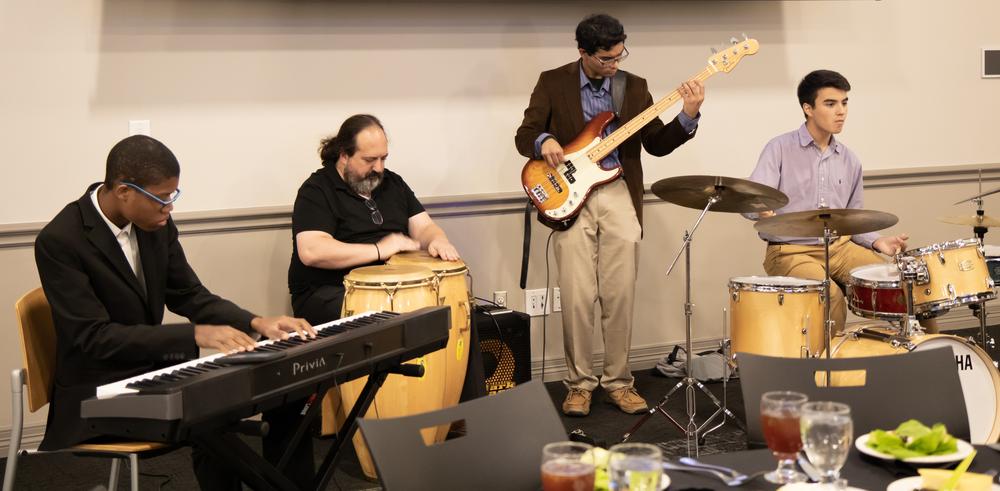

| Home | Performances | Our Sound | About the Band | Featured Guests |
|---|
Addis is a Dallas-area band that performs the first Saturday of every month at Shebelle Ethiopian Cuisine and Bar in Far North Dallas.
We celebrate the cultural richness of music, offering a global perspective that synthesizes jazz and world music. Our sound is reminiscent of the music of Roy Hargrove, Stevie Wonder, Jerry Gonzalez, Grover Washington Jr., Al Jarreau, B.B. King, Joe Henderson, Jaco Pastorius, and Chance the Rapper.
From left to right: Isaac Byrd, Mike Camerata, Chirag Gokani, Colman Burks